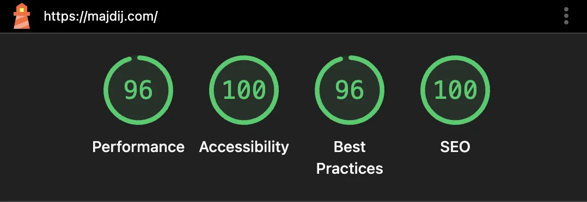

Developing My Personal Portfolio Website with Modern Web Tech: MajdiJ.com
Building my personal portfolio website to showcase my projects and skills.

I’ve always liked making things. From sketching app ideas and building a Minecraft server site for friends to experimenting with Weebly and Wix, wanting full control I moved away from templates, drag-and-drop builders to coding everything by hand. That curiosity pushed me into learning how the web really works.
This site, MajdiJ.com, is my portfolio and my laboratory. Showcasing my projects, the systems I design, and the practical skills I use to make fast, reliable and accessible websites, apps and software for users.
Table of Contents
Learning by doing
I taught myself web development through courses and video tutorials on Team Treehouse and YouTube. With a lot of experimenting I started with HTML, CSS and JavaScript and then expanded into server-side work and deployment. Along the way I picked up Node.js and Express for quick APIs, FastAPI for Python-based services, and Nginx for reverse proxying. More recently I’ve been using Cloudflare Workers and Pages to deploy sites at the edge for speed, security and reliability.
Projects are where you can apply your knowledge. I’ve pushed a mix of public and private sites and services, everything from small static sites to backend APIs. You can see the full list on my Projects page and view other projects I've worked on my GitHub page.
Why I built the site this way
For a portfolio, I wanted something that loads fast, is easy to maintain and is accessible worldwide. That's why the frontend is built with vanilla HTML, CSS and JavaScript. Using a lightweight, framework-free approach keeps page weight down and means faster initial loads for visitors and recruiters. I do in the future want to explore frameworks like React or Svelte for more complex projects, but for now simplicity and performance are key.
Hosting on Cloudflare Workers & Pages gives me edge delivery and simple serverless endpoints. In practice this means static assets are cached close to users, and small dynamic routes can be served without managing a full server. Where a traditional server is needed, for my API servers I use Node.js and FastAPI behind Nginx for routing and proxying.
I also connect a few third party services where they make sense. Forms use Formspree so I can simply collect messages without building backend, protected by Google reCAPTCHA to reduce spam. Google Analytics helps me understand how people find and use the site. These are practical choices that save time while keeping control.
Performance, accessibility and SEO
Performance, accessibility and discoverability are important, they matter for search engine indexing and reaching users. My Lighthouse scores for this website reflect that work:
Lighthouse scores – Performance 96 | Accessibility 100 | Best Practices 96 | SEO 100
Lighthouse is a tool made by Google that audits web pages for quality. High scoring sites provide better user experiences and are favoured by search engines.

(Lighthouse scores for main page of MajdiJ.com on desktop)-
Performance 96
Pages load quickly, so users can access content faster. Fast sites also rank better in search. -
Accessibility 100
Inclusive design means fewer barriers for users and allows everyone to access content. It shows I follow semantic HTML, provide alt text, and support keyboard navigation for people using assistive tech. -
SEO 100
The site is easy to find and share on search engines. Proper meta tags, structured data and clean URLs help improve visibility, showing I understand how to optimise for search engines to reach a wider audience.
Accessibility and good practices
I believe accessibility is not an afterthought. I use semantic markup, clear headings and alt descriptions for images. Keyboard navigation where appropriate make the site usable for people who rely on assistive tech. These are practical ways to make sure my work reaches the widest audience.
Static Site Generator (SSG)
Whilst building the site, I wanted an efficient way to manage content and deploy updates. To do this, I created a custom static site generator (SSG) using Python. This tool automates the process of converting markdown files into HTML pages, applying consistent templates and styles. It saves time and effort when adding new articles or updating existing ones, ensuring that the site remains easy to maintain as it grows.
I could have used a CMS or an existing SSG like Jekyll or Hugo, but building my own gave me more control and a deeper understanding of how static sites work under the hood. Whilst making a dynamic site with maybe a CMS and database would have been interesting, sometimes simpler is better, especially for a portfolio site where performance and reliability are key.
(New edited section Sunday, 14th December 2025)
What I’m exploring next
I plan to build more complex apps using modern frameworks and web binaries when a project needs them, but I keep returning to the principle of choosing the right tool for the job. I’m also experimenting more with serverless projects, dockerised environments and microservices so I can ship reliable systems that are easy to debug and scale.
See the work
If you want to see my projects, check my Projects page. For code and more technical details, visit my GitHub. If you’d like to get in touch, use the Contact form on my main MajdiJ.com page.
Building this website has been a practical way to show what I can do: design, code, deploy and measure a site that people can actually use. I’m always learning, and I’m keen to bring this approach to a team that values clean, accessible and well engineered web and app experiences, front and back end.